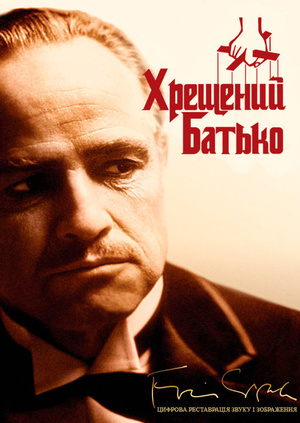
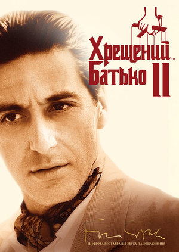
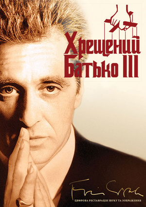

 Сюжет фільму розгортається навколо мафіозного роду Корлеоне, який контролює кримінальну діяльність у Нью-Йорку. Головний герой, Дон Віто Корлеоне, глава сім'ї, намагається передати свою владу своєму найстаршому сину, Майклу. Але коли Дона Віто вбивають відразу після несподіваного нападу, Майклу доводиться взяти на себе керівництво родиною. Він вступає в світ злочинності і поступово перетворюється з ніжного інтелектуала на безжалісного мафіозі. У процесі Майкл здобуває владу, вирішує змову проти своєї родини і стає новим королем кримінального підпілля.
У другій частині розкривається походження Дона Віто Корлеоне, як він прибув до Америки і заснував свою мафіозну імперію. Паралельно Майкл Корлеоне, син Дона Віто, намагається утримати сімейне домінування, проте зазнає втрат і зради з боку різних фракцій мафії. Майкл поступово стає все більш параноїдальним і жорстоким у своїх діях, щоб захистити свої інтереси. Він веде безпощадну боротьбу зі своїми ворогами, але його власна душа зазнає великих випробувань. У своїх намаганнях зберегти владу, Майкл примушує робити важкі вибори, які мають серйозні наслідки для його родини та близьких.
Майкл Корлеоне, лідер мафіозного роду на старості літ, намагається легалізувати свої бізнеси і забезпечити мир для своєї родини. Але його плани зриваються через труднощі та інтриги в мафіозному світі, зраду з боку близьких і душевні муки, які переслідують його. Майкл змушений стикатися з новою хвилею насильства і боротьбою за владу. Він виявляється в оточенні зрадників та загрозливих ворогів, а його родина стає об'єктом нападів. Майкл мусить зробити остаточний вибір між залишенням у світі злочинності або знайти шлях до спокою і спасіння для своєї душі.